Applying Fourier Series to Hot Rings
It is now time to pay our scholarly dues. We will discuss Fourier's initial application of Fouirer Series to the problem of heat transfer on a ring. As Prof. Osgood said, the hot-ring problem has become an important part of our intellectual heritage, and we will find it useful to go through this famous example.
In Paris, there's lots of big heavy anchor rings that you can find in the city. As the story goes, Fourier stumbled across one of these rings one day, and wanted to figure out the dynamics of heat flow on one of these rings. I really have no idea behind whether this is true or not, but hopefully this story provides some (?) motivation for why hot rings are a problem in the first case.
Anyways, Fourier considered the following problem:
Suppose we heated up a ring to have a particular temperature distribution at different points along the ring. If we waited for the ring to cool down, how would this temperature distribution evolve over time?
To translate this physical question into a mathematical statement, suppose we write down the initial temperature distribution as some function 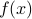 of the position  along the ring. The quantity we wish to find is the temperature at position after some time
along the ring. The quantity we wish to find is the temperature at position after some time  , which we will write as
, which we will write as  . The initial condition of the problem is that at time 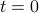, the temperature distribution is given by 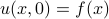.
. The initial condition of the problem is that at time 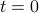, the temperature distribution is given by 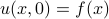.
The reason why we use Fourier Series to solve this problem is that the function is actually periodic in : the points and 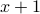 refer to the same physical location on the ring. (We're using units where the ring is one unit around). It follows that must equal 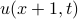, since they describe the temperature at the same point along the ring.
The heat equation
The time evolution of temperature on the ring is governed by a partial differential equation known as the heat equation. It turns out that the heat equation isn't terribly difficult to derive from simple physical considerations; if I have time later this quarter, I might come back to this page and work out the derivation here. But for our purposes, we can just take the heat equation for what it is: it tells us how quickly the temperature at any particular point changes over time, and relates this to the spatial variation in temperature near that point.
Mathematically, the heat equation is written as
where  is a physical constant (the heat diffusivity?) that tells you how well that particular material conducts heat. In this problem, we'll choose units so that 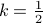.
is a physical constant (the heat diffusivity?) that tells you how well that particular material conducts heat. In this problem, we'll choose units so that 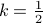.
The form of the heat equation actually tells us qualitative behavior about how we expect solutions to behave, but for now we'll just move on to the solution. (Honestly, I might just come back and redo this problem as a physicist, so that we could interpret the units of various variables and use dimensions to help us out…)
The heat equation is a partial differential equation (PDE), which isn't quite as simple to solve as an ordinary differential equation (ODE). In this problem, the main trick is to use Fourier Series to help us reframe the (PDE) in terms of an ODE. (Note that depending on your level of rigor, you might interpret differently how exactly Fourier Series help us here.)
A Fourier Series Ansatz
Motivated by the periodicity of 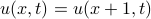, we may attempt to expand itself in terms of a Fourier Series as
where the Fourier coefficients 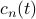 are unknowns that we'll have to solve for. In physics, we call this an ‘‘ansatz’’, or a guess about the shape of the solution. If we guess a good ansatz, the problem becomes easier. In this case, with the benefit of hindsight, we know already that using Fourier Series is the right approach.
Notice that I've put in time-dependence into the Fourier coefficients  themselves; that is, they are no longer constants, but they vary in time. The reason for this is that we want to vary in time, but since the Fourier sinusoids 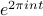 don't vary in time (they only vary in space), we need to introduce the time-dependence into their coefficients.
themselves; that is, they are no longer constants, but they vary in time. The reason for this is that we want to vary in time, but since the Fourier sinusoids 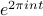 don't vary in time (they only vary in space), we need to introduce the time-dependence into their coefficients.
In a sense, we've reduced the problem to finding the set of functions (which, again, represent the time-varying weights of each of the Fourier components.) If we knew what these functions were, we could plug them into our ansatz above and get the form of .
Solving for the Coefficients
To solve for the coefficients , we plug in our Fourier ansatz into the heat equation:
Let's consider what happens when these derivatives hit the ansatz. On the LHS, the only time-dependence is in the coefficients , so the time-derivative just turns the into 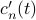. On the RHS, the only spatial-dependence is in the complex exponentials 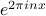; since we are hitting it with the spatial derivative twice, we pull down two factors whatever's next to in the exponent. So our expression simplifies to
For this equality to hold, each term on the left must equal its corresponding term on the right. (There's a more subtle argument, but thankfully the naive approach works.) If we match the coefficients of the exponentials, we find that
or
which is an ordinary differential equation in for the coefficients ! The solution to this first-order ODE can be readily written down as
which says that each of the Fourier components start of with some initial value 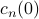 at time , and then decay exponentially in time.
Matching Initial Conditions
Our final task is to figure out the initial values of the coefficients . We will need to use one final piece of information: the initial temperature distribution at time . Somehow the information about must be encoded within these coefficients.
Upon a bit of thought, we realize that the initial values of the coefficients are actually the Fourier coefficients 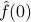 of the initial temperature distribution ! Since the coefficients represent the Fourier coefficients of at time , their initial values must be the Fourier coefficients of 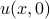 at time . in other words, the are the Fourier coefficients  of the initial temperature distribution .
of the initial temperature distribution .
So 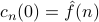.
Putting it together
Putting in our solution for the time-dependence of the coefficients , we arrive at our final expression for the time-varying heat distribution on the ring:
where are the Fourier coefficients of the initial heat distribution
This final result is quite magical and beautiful: we have an explicit formula for the solution of the heat equation! There's plenty to be said about this solution, but I'm getting hungry so I'm going to eat some lunch now.
Okay back from lunch now. Notice that the Fourier coefficients of the solution
decay exponentially in time, and that the bigger the  , the quicker the coefficient decays to zero. In a sense, we can say that the heat equation ‘‘smoothes out the wiggles’’ in the temperature around the ring; the shorter the wavelength of the wiggles, the more quickly the wiggles get smoothed out.
, the quicker the coefficient decays to zero. In a sense, we can say that the heat equation ‘‘smoothes out the wiggles’’ in the temperature around the ring; the shorter the wavelength of the wiggles, the more quickly the wiggles get smoothed out.
In particular, note that the 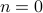 coefficient actually remains constant over time, because the exponential term is one. This tells us that the average temperature of the ring  stays constant over time; in other words, heat is conserved. As 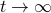, all of the terms die away except for the term, and the ring just becomes uniformly hot (or cold) with the average temperature.
stays constant over time; in other words, heat is conserved. As 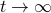, all of the terms die away except for the term, and the ring just becomes uniformly hot (or cold) with the average temperature.
A Taste of Convolution
The next day (Mon Week 2), we made a few more concluding remarks about the heat equation; in particular, the fact the the solution could be written as a convolution integral. We'll be discussing convolutions in their full glory later on, but it's a nice sneak peak into what's to come.
If we expand the solution to the heat equation by plugging in the formula for the Fourier coefficients , it looks like
and by grouping together and combining all the terms that depend on , we can simplify the expression to
Our solution can now be written as a convolution integral,
where the function 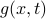 is known as the fundamental solution or Green's function of the heat equation, and takes the form
We'll discuss these concepts in much more detail later: it turns out that convolving two functions is a very general thing we can do, and the fact that solutions of the heat equation take the form of a convolution with the fundamental solution has deeper consequences and properties. But for now, we will take this as foreshadowing for later.
A preview of delta ‘functions’
Earlier, we figured out already what would happen if we took the limit of the heat equation – everything would die out except for the component, and the heat distro would apporach a uniform distribution of its average value. Correspondingly, the green's function approaches unity as .
What if we look at the other limit, as 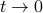? If we directly plug in to the greens function, we find that
i.e., it approaches a Fourier Series where all the coefficients are 1.
There is no way to make sense of this series ‘‘classically’’ in terms of functions that we know and love; however, the function does converge into another sense to a comb of 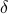-function spikes. We'll also talk about delta functions in the future and spend good quality time with them. They are pretty cool, but also pretty weird.